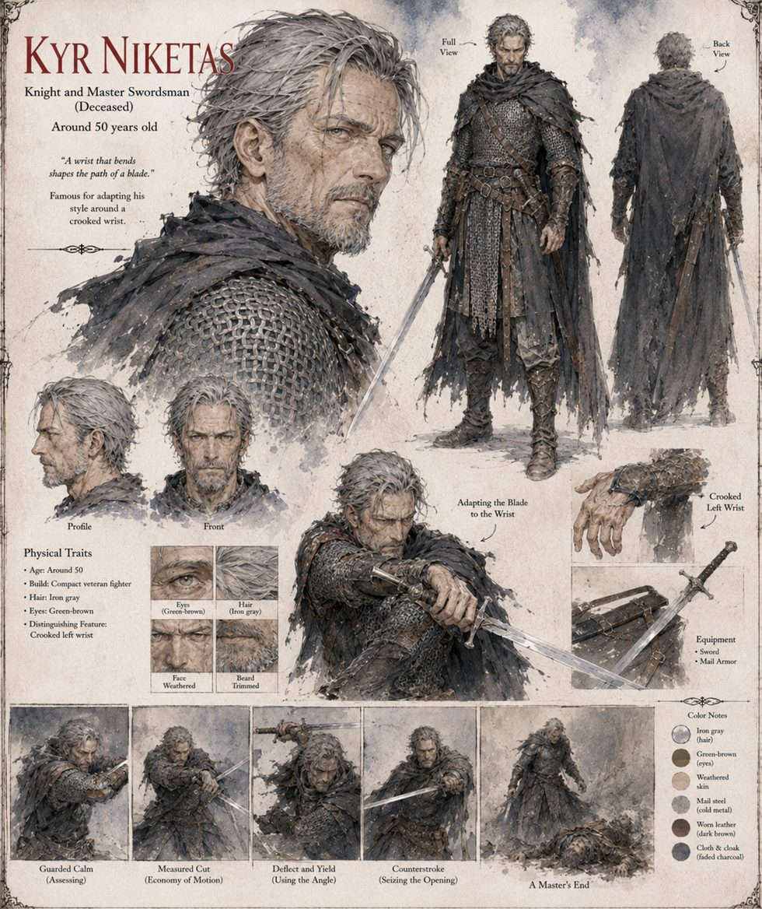

Kyr Niketas
Knight and master swordsman · one of the Twelve · around 50 years old · deceased
One of the Twelve, a swordsman other swordsmen studied, whose whole style was built around a wrist he broke as a squire and never let heal straight. It comes back from the chamber exactly as crooked as it left, and he still steps the half-pace wider and invites the attack to the weak side. But the half-beat of punishment that once arrived a shade late now arrives at the single optimal instant, against every opponent, as though the wrist were one more fixed variable in an equation he solves without interest.
He dismantles four squires and two guardsmen in an afternoon, each bout ending in a clean disarm rather than a wound, because wounding is inefficient. Theoktistos sees it first and puts the word to it: not swordsmanship but geometry.
“A wrist that bends shapes the path of a blade.”